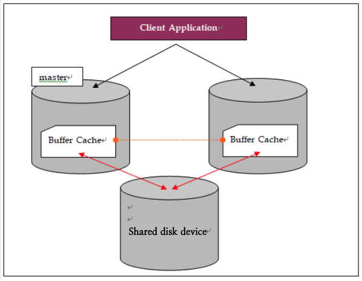
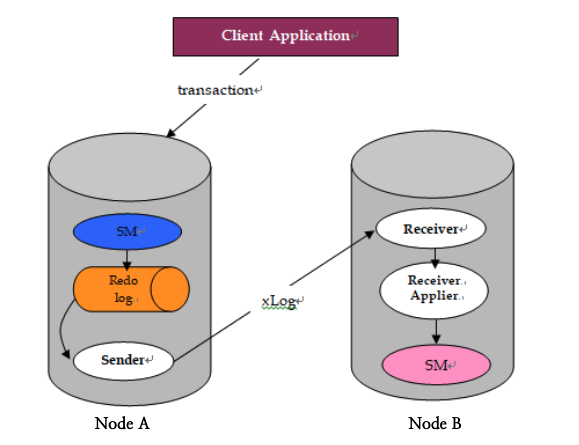
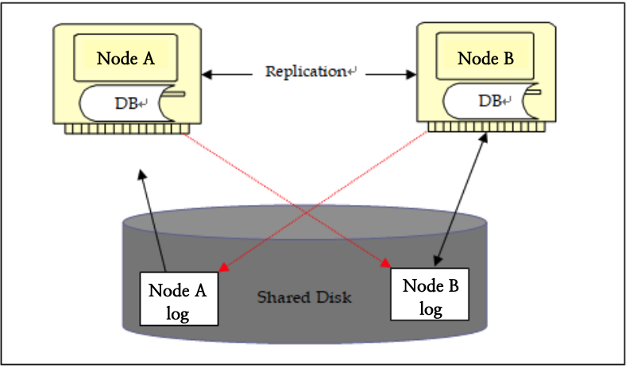
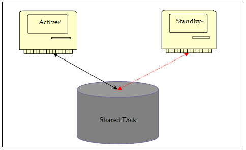
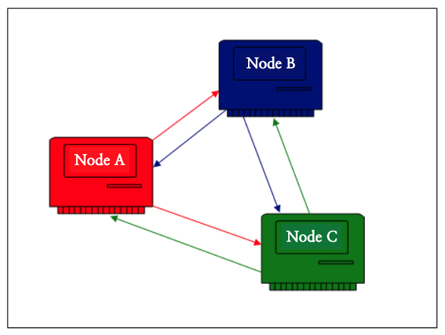

Overview
In a system operating environment that provides non-stop service, the following should be considered.
- Ensure availability in case of failure
- Configuration and extension of the system considering performance
As a method to implement these, a disk sharing method, a replication method using a network, and a switching method using an HA solution are widely used in the field.
The high-availability (HA) architecture of Altibase considers performance and proposes a network-based data replication configuration.
This document describes replication provided by Altibase and an efficient system configuration based on Altibase. (Altibase does not support the high availability method of the disk sharding among the methods specified above.)
This document was prepared based on ALTIBASE version 7 or later.
High Availability
This section describes the goals and purposes of high availability and explains the pros and cons of the current industry-wide approach of high availability.
Node
This refers to each server connected to one or more networks configured to perform the service operated by the user. Each node can serve independently and all nodes can process the same service.
Fail-over
This refers to the process of transferring service to another normal node when a failure occurs between nodes configured for service. Fail-over allows only minimal service downtime.
Plan for High Availability
For high availability, the user must configure a service system by grouping two or more nodes for the same or different services. The system must meet the following goals:
- Compared to the environment composed of a single node, there should be no significant performance degradation.
- Only minimal service downtime is allowed in a fail-over situation due to failure.
High availability requires ensuring that the service system operated by the user exhibits the maximum performance, and in any type of failure, it can be seen that it requires a method that allows the service to immediately resume with minimal downtime. (Goals: high performance and continuous service)
Method | Description |
Disk sharing method | A method of sharing a single DB on a disk accessible to all nodes (sharing DB) |
Network replication method | All nodes own their respective DBs, and the method of transmitting and reflecting changes through the network (each node owns a separate DB) |
First, let's take a closer look at the disk sharing method.

In the disk sharing method, each node has its own buffer cache, and a node of the master concept that controls the synchronization of the buffer cache must exist within the entire group. When each node needs to read data that does not exist in its own buffer cache from the shared disk, it requests to read from the master node, and the mast node replicates from that node if there is a node already owned in the buffer cache of the node belonging to the group. This is configured in a form that transmits it or allows the requesting node to read from the disk. In the same case of change, access is possible only if the master node allows the change.
This form may be the best method for data integrity, but has the following problems.
- All nodes cause significant performance degradation due to contention caused by communication with the master node and waiting for access to the buffer.
- Communication equipment for high-speed replication of buffers is required between all nodes. If there is a failure in such communication equipment and line, it may cause an overall failure.
- Even when a failure occurs in the shared disk device, the entire system cannot be serviced.
On the other hand, the network replication method is based on the operation mode of a single system and the transmission of additional transaction logs. Therefore in terms of performance, it is possible to maintain a performance level of 90% or more compared to a single system because it is not necessary except for the cost of log transmission with the network.
In addition, even if a specific node in a group fails, it is possible to maintain continuous service because each has a separate DB.
However, the method of transmitting the transaction log with the network is the difference between the time of the transaction occurring in the local system and the time of the transaction occurring in the other node. Therefore, it is impossible to have a 100% guarantee of consistency of day in two or mode nodes. This problem will be dealt with in detail later.
Both of the above methods have their own pros and cons. Therefore, the user needs to configure the optimal system with an accurate understanding of each method.
ALTIBASE is a performance-oriented product, focusing on high availability while guaranteeing maximum performance in the service operation. The below section will describe the concept of replication and how network replication can be used with high availability despite having data consistency problems.
Concept of Replication
This section describes the concept and operation structure of replication.
The basic concept of replication
The structure of ALTIBASE replication is as follows.

Several threads required for transaction processing in ALTIBASE use the storage-manager module. The log thread that uses the SM module plays the role of recording the transaction log required for recovery during transaction processing.
The basic overall patter is when a transaction log is recorded locally by the SM, the sender reads the recorded transaction log and sends it to the designated node(s), and the receiver of the node analyzes the received log and reflects it back to the receiver's own node that operates in a structure.
- Asynchronous replication using a transaction log-based network.
- Replication configuration can consist of n numbers, and tables included in the replication configuration must have a PK.
- Network for replication can be replicated with n networks for stability.
Let's take a look at the operation of the Sender and Receiver.
Sender
When a change transaction such as Insert/Update/Delete other than the select statement occurs, information necessary for processing and restoring is recorded. Based on this transaction log, the sender finds out what type of transaction occurred and the value before and after the data change.
The sender creates a transmission data called xLog based on the read log. It can be seen as a structure containing the following information.
| Description |
Table | The target table must be found in the receiving node. |
PK | The target data must be found in the receiving node.
|
Column | The target column must be found in the receiving node.
|
Before Value | To compare whether data is the same between the receiving node and the transmitting node.
|
After Value | This value is used when the data value can be changed in the receiving node. |
The sender collects only necessary data for each transaction, creates xLog, and sends it to the Receiver of the other node.
Transaction | Sender log |
INSERT | Table, Column Value |
UPDATE | Table, PK, Before Value, After Value |
DELETE | Table, PK |
Since the transaction that occurs locally is processed regardless of whether it is transmitted in replication (only the sender is checked), there is no interference due to replication, ensuring the processing performance. (This is called lazy mode replication.)
In this case, many would ask themselves if there is any data that the other party hasn't received? To answer this question, this will be explained in detail again from the receiver side.
The transmission method of the sender is the lazy mode by default, and can be set in such a way that it checks the transactions are reflected in the other node. This is called eager mode.
Receiver
The receiver sends the received xLog to Receiver-Applier (hereinafter referred to as Applier). Since the received xLog is a transaction log recorded after processing through QueryProcessor in the other node, the Applier requests processing to SM without a separate validation process. (QueryProcessor refers to an internal module that performs validation and optimization for queries executed in the ALTIBASE.)
When reflecting in the receiving node, be sure to check whether the value of the received data and the value of the data existing in the own node are the same.
After reflecting, when the Receiver sends an ack to the other Sender, the Sender changes the location to which is should retransmit it. In order words, since multiple transaction XLogs can be contained in the communication buffer for replication, the Sender always records the location of the log it sends and the location of the transaction log to be retransmitted in preparation for failure between transmissions or failure of other nodes. This information is updated when receiving ack from the Receiver that some parts were reflected.
Therefore, since the Sender checks in a delayed form even if it does not immediately check whether the actual receiving node has reflected it, the case that the log to be sent by the Sender is not transmitted to the other party never occurs. This works the same even if a network failure occurs.
In other words, when it detects that a network failure has occurred, the Sender checks the network in a fixed periodic unit. When it detects that normal recovery has occurred, it connects to the Receiver of the other node and sends it again from the location where it needs to be transmitted.
Problems that can occur in a replication environment
Since replication uses a network, the following problems can occur:
- Data conflict
- Data transmission gap
In the case of a transaction in which two nodes change data with the same PK to different values, the disk sharing method has no choice but to proceed with the change transaction one by one by the node requesting each processing. Therefore, if such transactions are frequent, the performance is bound to be slow.
On the other hand, unlike the disk sharing method, replication does not take into account changes to the data of other nodes when a local transaction occurs, so there is no interference with each other, but due to this, the data conflict that may occur.
Order of occurrence | Node A | Node B |
Before occurrence | Pk=1, c1=10 | Pk=1, c1=10 |
Update at the same time | Update t1 set c1 = 15 where pk = 1 | Update t1 set c1 = 20 where pk = 1 |
After occurrence | Pk=1, c1=15 | Pk=1, c1=20 |
Sender | Send (t1, pk=1, c1=10 --> 15) | Send (t1, pk=1, c1=10 --> 20) |
As in the example above, if the data has the same data but has the same PK before it is changed to different values, each node will proceed regardless of the transaction of the other node. At this time, if data is transmitted to each other while the change has already been completed, the previous values of the data are compared. In the case of node A, the current value of 15 and the received xLog is recorded as 10, so the transaction for the received xLog fails. This is called Update Conflict.
The types of Conflict are as follows.
Type | Description |
Dup Conflict | When data having the same PK already exists in the receiving node while performing Insert, etc. |
Update Conflict | When the current value of the target column is not the same as the received value while performing Update |
Not Found Conflict | When data does not exist while performing Update or Delete on PK in the receiving node |
That is, when two or more nodes change data differently for the same PK, there may be cases in which data exists in an incorrect state at the same time.
To avoid this problem, it can be solved by triggering a transaction considering the PK of a separate range for each node. In other words, Active/Active should be configured considering the PK range, not the Full Active method.
Altibase provides a property called REPLICATION_UPDATE_REPLACE for this part so that even if the previous value is different fro the UPDATE transaction, the received value can be changed. However, this problem is not a perfect solution to the Update Conflict. This is because if all nodes that continuously perform the service have the same PK and continuously update data to different values, they will both eventually have different values again. This property is merely a provision by assuming that the data will be corrected at some point in the end.
Another problem of replication is that if the accumulating speed of the change transaction log of the sending node is faster than the xLog transmission speed to the other node, the data retrieved result of the sending node and the receiving node may be different at a specific time. In other words, it means a case in which transaction logs that could not be transmitted to the other node through the network are accumulated in the sending node, and this is called a replication gap.
These problems can make users hesitate to choose replication in terms of data consistency, even if high-performance data processing is possible. In the next section, we will take a look into how to properly avoid such data conflicts and delays to enable service with efficient replication configuration.
Efficient Replication Configuration
This section will describe the configuration method using the Off-line Replicator function and HA solution, which are complementary functions of replication provided by Altibase.
Off-Line Replicator
The delay of replication transmission is the problem of ensuring consistency due to data that could not be sent at the time of failure of the sending node. There is no change in the fact that the delay of transmission is reflected only with a difference in time when controlling is possible within the system configuration where the PK is separated, but the failure occurring the delayed sate can be critical for operating.
Altibase provides a function called Off-Line Replicator starting from ALTIBASE ver 5.3 to solve this problem. This function solves the data inconsistency by directly reflecting the data that was not transmitted by reading the transaction log file of the failed node by creating an Off-Line Replicator in the normal server when a failure occurs in the server that was actively serving it. (The operator can easily create it in the form of an SQL statement).
To use the Off-Line Replicator, it is possible to configure the disk sharing device so that all nodes can write each transaction log in the form of sharing the disk with the failed server, or connect to the failed server with FTP to bring and reflect the transaction log.
With this method, the consistency due to the non-transmission of data is eliminated and the service can be started in the normal node.

The configuration is different depending on the system environment, but this is a method that reads the transaction log that failed to transmit the failed node directly from the normal node at the time of failure and reflects the normal node itself to prepare for the service switch.
Service Configuration using the HA Solution
Configuration using the HA solution refers to one node performing a service and the other node is in a standby state. When the HA Solution checks the state of the node in service periodically and determines that there is a problem, the shared disk is switched to make the node in the standby state.
When applied to Altibase, there are the following limitations, but it has the advantage of avoiding the data inconsistency problem.
- Altibase of the standby node cannot be running. It must be in the completed state. (The engine itself cannot all run at the same time)
- Since the running state has be to performed after the transmission, if the memory DB usage is large, it takes a long time in proportion to the size. In addition, if there is a large amount of operation at the time of failure, recovery time for this is required in the running stage. Therefore if service downtime is the priority, this should be considered.

The meaning of Active/Standy is the service standard, and Altibase of Standby means the completed state.
Generally, it is composed as follows.
| Configuration items
|
Shared disk | Transaction log file and data file
|
Each node | ALTIBASE engine, trace log file, license, property file |
If configured as above, when a situation in which the HA solution is switched over occurs, the standby node that can access the shared disk runs by using the transaction log and data file located on the shared disk, and the service can become available.
Since the configuration using this HA solution does not use replication with the network, there is no need to consider the data collision problem or the replication gap problem.
Data Delay Considerations
Generally. the replication of ALTIBASE is 1.2GHz or higher and CPU performance is about 10,000tps per second on average. That is, if the change transaction occurring within one node per second is within the above performance, it can be calculated that redundancy with the network can be processed without delay.
If the service itself handles only continuous changes, data delay cannot be avoided in the replication configuration with the network. However, it can be seen that it can be serviced if the amount of operations for changes is at the level that can be handled by replication and a service that takes into account the temporary delay of data.
Even if the data could not be sent at the time of the failure, it is possible to configure so that the service itself does not become a problem by performing a service after recovery with the Off-Line Replicator before service switch.
Such a configuration is based on prediction, and it is a case of considering transmission delay to some extent. If a service cannot consider transmission delay, a method of configuring the replication mode to Eager mode can be used.
Replication operation method | Description |
Lazy | The sending node does not wait for the progress of the local transaction and the transmission of xLog. |
Eager | The sending node first reflects the local transaction and then sends the xLog to the receiving node, and waits until the result is returned after reflection |
The data transmission delay problem of replication described so far can occur in the lazy mode, and in order to avoid this problem, the Eager mode is provided. Since the Eager mode checks the reflection of the other node, there is no data delay. However, since it has to wait for the transaction of the other node to be reflected, the Eager mode causes a significant performance degradation compared to the Lazy mode. However, even in this part, the degree of performance degradation may not be significant depending on the proportion of the change operation among the entire transaction.
Therefore, the user can use Lazy/Eager mode separately according to the operation. If the task does not necessarily need to consider the data delay, use the Lazy mode that can enhance the performance, and if the task needs to consider the data delay, use the Eager mode. In addition, Since Eager/Lazy mode can be specified for each session, it can be applied separately by session.
Operation | Replication operation method
|
Account balance, deposit | The session to perform this task is in Eager mode |
Login time information | The session to perform this task is in Lazy mode |
Unlike the Lazy mode, the local transaction also fails when conflict occurs in the Eager mode. Therefore, it should be well planned so that the data does not change due to transactions in the Lazy mode.
Service configuration to prevent data conflict
Data conflict occurs when trying to access data with the same PK at the same time in a replication environment. Therefore, it is recommended to configure the service so that the service program of the user does not access the same PK.
Configuration | Service configuration example 1 | Service configuration example 2 |
Node A | Change transaction + retrieve transaction | Transactions of Seoul and Gyeonggi areas
|
Node B | Retrieve transaction | Transaction of Chungcheong, Jeolla, and Gyeongsang areas |
In the same configuration as for example 2 of the service configuration, there are many things to consider at the stage of user development, such as the distribution of transactions. This requires more consideration of how to classify the range and how to implement it.
Altibase provides the following functions for data conflict. It is important to find a proper configuration for each service configuration.
Method | Description | ||
REPLICATION_UPDATE_REPLACE=1 | To update even if the received the before-value of xLog and the target data value of the receiving node do not match
| ||
Master / Slave method | Each node is designated as Master and Slave and operates as follows when data conflict occurs. | ||
Transaction | Master | Slave | |
Insert | Ignored | Reflect after deleting existing data | |
Update | Ignored | Reflect as it is | |
Delete | Ignored | Ignored | |
TimeStamp method | To compare each TimeStamep when conflict occurs in the table configured in the replication and match it with the data that is created after. | ||
More detailed explanations can be found in the manual.
Replication configuration considering data consistency
As discussed above, replication requires the configuration of a service system in consideration of the problem of data delay and conflict. If the following configuration is made using the function provided by Altibase, the data inconsistency and delay can be completely solved.
- Configure Active/Standby type
- Failure recovery with the Off-Line Replicator
All services are performed by one side, and when a failure occurs, it refers to a method of starting service by performing a reflection on data that has not been reflected with the Offline Replicator and switching the service.
Situation | Node A | Node B |
Normal Service | Process all services | Receive only replication logs, standby status
|
Failure occurs | Perform failure recovery | After reflecting all transaction logs of Node A that Node B has not received with the Off-Line Replicator, service is performed at Node B |
Node A recovery | Match data by receiving all replication logs from Node B after failure | Automatically detect recovery of Node A and transmit all transaction logs after failure from replication |
When using the HA solution in the above configuration, it is possible to automate all processes of switching services when a failure occurs with the HA solution without user intervention. As the Off-Line Replicator operates in the form of SQL statement as described above, it is possible to easily automate it by including it in the operation procedure of the switching situation if it registered in the script form in the HA solution.
Design of N-Way Replication
The replication of Altibase supports N-way replication, and up to a total of 1:32 nodes can be connected. When more than three nodes are configured as replication, the replication object should be created as follows, and the network expansion card should be considered in advance.

Sender/Receiver for each target connection must exist in every node, and for this purpose, the target node to which it wants to send data and each replication object must be created. In the above figure, a replication object between (A-B, A-C) should be created in the A node. Node B can synchronize data between (A-B-C) normally only when the replication object between (B-A, B-C) created.
Importance of Replication Design
The important thing can be said to be the design part of whether to use each function in a good combination suitable for the operation purpose. At the design stage, the following two options should be fully considered.
- Which method to choose between a lazy and eager mode for the replication? Or, if both are used together, what kind of operation will be serviced in different ways?
- What is the right solution for data conflict and delay?
Additional Considerations for Replication Configuration
This section describes considerations for replication configuration.
Considerations for Disk Capacity
If a problem occurs in the replication connection in any form, the Sender cannot send transaction logs occurring locally to the other node. In this case, even if a checkpoint occurs, the transaction log files cannot be deleted to maintain the log files to be replicated.
Therefore, there is a possibility that a failure of insufficient disk space may occur due to the accumulation of secondary transaction log files due to a failure of the primary transmission delay. To avoid this problem, if a transaction log file exceeds the specified value by using the property called REPLICATION_MAX_LOGFILE, all replication transmission histories are abandoned and the transaction log file can be deleted at the checkpoint.
However, in this case, it is not recommended unless there is a special occasion because the user needs to match the consistency of the DB between nodes after failure recovery. Rather it is recommended to calculate the disk capacity in advance so that it does not become a problem even if it accumulates as much as the expected time required to overcome a failure in consideration of the daily occurrence of the transaction log.
Caution for Bulk Change
What is sent in replication is based on the transaction log, not based on SQL. Therefore, when the bulk change is performed, the transaction log must be transmitted to the other node as much as the number of changed data. For this reason, in the case of a busy system that handles very frequent services, the reflection is delayed. Therefore, the following two methods are recommended to perform the bulk change.
- The process by dividing into small account of change operation using the limit clause
- alter session set replication = false; the same change is performed on all nodes by using the option.
Sender Status Monitoring
If a Sender exists in the stopped state after being started at least once, the log to be sent is continuously maintained. In this case, it should be noted that if the user doe not monitor separately, a disk pool failure may occur due to an increase in the transaction logs.
Replication Dedicated Line
It is recommended to use a dedicated line separately from the service network for replication. In particular, it is recommended to use a network with a bandwidth of 1G or higher. In addition, it is also recommended to secure stability by having two or more dedicated LAN cards for replication in case of network failure.
Parallel Applier Option
Parallel Applier is an option that improves replication performance by creating multiple appliers that are reflected in the storage manager.
The replication performance is improved by distributing the xLog received from the Sender in a transaction unit so that the Receiver can process the xLog received from the Sender in parallel, and executing XML in parallel. Therefore, this option is suitable for replication consisting of long transactions. When there are many replication transactions composed of short transactions, performance may be degraded because they undergo frequent commit sync commits. So, when there are many replication transactions composed of long transactions, performance can be improved because the sync commit process is rare.
Sequence Replication
The sequence replication is a function that allows a remote server and local server to use the same sequence even when a Fail-over occurs. Thus, the same sequence and the same program source can be used in the application.
The sequence replication requires that the cache start value is duplicated so that sequence values do not overlap in two servers. The cache-sized sequence is stored in memory and used, and when all stored sequences are used, the cache-sized sequence is stored in memory.
The Altibase replication supports only tables, so a table for sequence replication is internally created.
Constraints to Consider for Replication Configuration
- Tables configured for replication must have PK.
- Tables configured for replication cannot update PK. (From the DBMS side, it can be said that the implementation of the operation that tries to update the PK itself is the wrong method.)
- Tables in a node configured for replication must have the same column information, PK, and NOT NULL information.
- Since there is a possibility that data inconsistency may occur due to delay of replication, it is recommended not to use trigger and foreign-key at the source. However, this can be allowed depending on the configuration environment or operation purpose.
- When executing DDL operation on a table configured for replication, the table must be temporarily removed from the target replication list in the replication before executing it. (Some DDLs (such as add column) can be executed without removing the list of tables in replication during operation. Refer to the manual for details)
- Since the reflecting speed of the memory DB and the reflecting speed of the disk DB are different, it is recommended to take the replication object separately for memory and disk when the order of reflecting memory and disk is not important for the operation.
- Refer to the process of transferring service to another normal node when a failure occurs between nodes configured for service. Fail-over allows only minimal service downtime.
Summary
We have described the overview, problems, and solutions of Altibase replication.
Replication using a network clearly has a data consistency problem due to transmission delay in case of data conflict or failure. However, it is possible to avoid the problem of data conflict by classifying the range of the change transaction by node properly with operation analysis as in real cases. The problem of data consistency occurring when a failure occurs can be solved with the Off-Line Replicator.
Therefore, the following three processes should be sufficiently considered:
It is necessary to first identify the operation requirements to prevent data conflict.
When configuring Active/Active
When configuring Active/Standby
Task implementation requirements
·Separate configuration for each task
·Separate configuration of the scope of change
· Only one node performs the change transaction
· Retrieve transaction is executed on one or all nodes
Purpose
Aim to configure redundancy so that data conflict does not occur at the source by preventing access to the same PK.
● Active/Standby classification is based on service (This refers to that all ALTIBASE engines are running)
- In the event of a failure, the data could not be transmitted. As described above, this part should be solved with the Off-Line Replicator provided in ALTIBASE version 5.3 or later, or the system configuration should be made.
- As in the "Constraints to Consider for Replication Configuration" mentioned in the document, there are constraints that must be considered for replication configuration, but it should be noted that the replication configuration itself may not be possible if this is recognized at the design stage.
{kind=link}
{kind=link}
{kind=link}
{kind=link}
{kind=link}